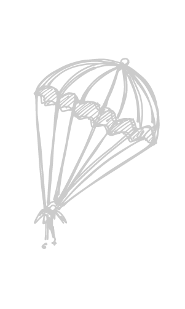

<mat-toolbar
  *ngIf="currentUserId"
  color="primary"
  class="expanded-toolbar mat-elevation-z5"
>
  <button class="logo" mat-button routerLink="/">
    {{ title }}
  </button>

  <div fxLayout="row" fxHide fxShow.gt-sm>
    <button mat-button routerLink="/">
      <mat-icon>home</mat-icon>Главная
    </button>
    <button mat-button [routerLink]="['/profile', currentUserId]">
      <mat-icon>person</mat-icon>Профиль
    </button>
    <button mat-button *ngIf="currentUserId" (click)="logout()">
      <mat-icon>exit_to_app</mat-icon>Выйти
    </button>
  </div>
  <button mat-button [mat-menu-trigger-for]="menu" fxHide.gt-sm>
    <mat-icon>menu</mat-icon>
  </button>
</mat-toolbar>
<mat-menu #menu="matMenu">
  <button mat-menu-item routerLink="/">
    <mat-icon>home</mat-icon> Главная
  </button>
  <button mat-menu-item [routerLink]="['/profile', currentUserId]">
    <mat-icon>person</mat-icon> Профиль
  </button>
  <button mat-menu-item *ngIf="currentUserId" (click)="logout()">
    <mat-icon>exit_to_app</mat-icon>
    Выйти
  </button>
</mat-menu>
<router-outlet></router-outlet>
